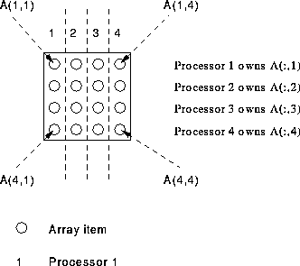

A * instead of a distribution method means: ``do not distribute this dimension''.
PROGRAM Skwiffy
IMPLICIT NONE
REAL, DIMENSION(4,4) :: A, B, C
!HPF$ PROCESSORS, DIMENSION(4) :: Q
!HPF$ DISTRIBUTE (*,BLOCK) ONTO Q :: A, B, C
B = 1; C = 1; A = B + C; PRINT*, A
END PROGRAM Skwiffy
Here, the first dimension is not distributed, the second dimension is distributed blockwise. This means that the second dimension is divided into equal sized blocks (the first dimension is not partitioned at all) and the sections are then distributed onto a 1D processor grid. The distribution of elements is such that:
This can be visualised in Figure 21.

Figure 21: Visualisation of * Distribution
There must be the same number of non-* distributed dimensions as there are dimensions in the processor grid.
Now try this question